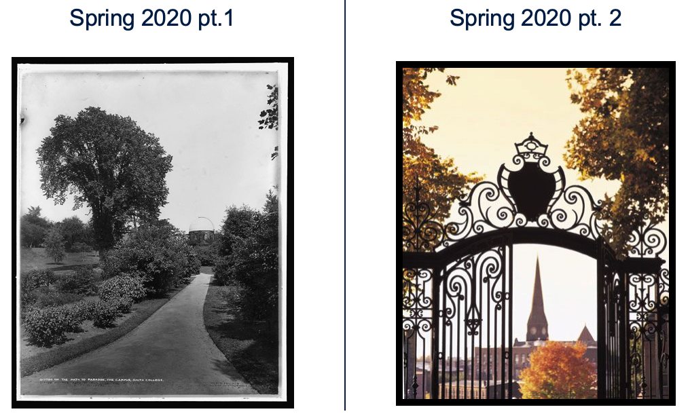

Instructor: R. Jordan Crouser
Grader: Ajinkya Ghadge
Course meeting times: Tuesday and Thursday 10:50am - 12:05pm
Course Location: Ford 240
Office hours: Wednesdays 9am-11am (individual) and Thursdays 1pm-3pm (group) in Bass 107
Virtual Drop-In Classroom:
https://smith.zoom.us/j/209592518 (password required, see Slack/Moodle)
Virtual Drop-In Hours:
Tuesdays and Thursdays 11am - 12pm EST
Wednesdays and Fridays 3pm - 4pm EST
These are extraordinary times. The COVID-19 pandemic has impacted every aspect of life: how we work, play, move through the environment, and certainly how we learn. Being away from campus, spread across different time zones, many of us caring for family members and children… these evolving circumstances require us to radically rethink how we spend our time together, and we will make a lot of mistakes along the way.
In all of this, I want to you know that my commitment to you remains unchanged:
That said, this endeavor is going to look quite different from the first half of the semester. Remember:

As we move forward with the remainder of this term, I want to acknowledge that these circumstances are unprecedented in our lifetime. This brings with it a lot of firsts: this is my first time moving a course online, and it’s probably your first time having all of your courses change the “contract” halfway through the semester. It is also our first time figuring out how to weather a global pandemic, and learning ways to cope with the stress inherent in that process.
I want to be transparent with you: I am giving myself permission to do what I can, and letting go of what I can’t. This means acknlowledging (publicly) that what I am able to do right now will likely fall far short of my standards for myself during a normal semester. This is true for all of us; right now, accomplishing anything related to your academic work is pretty spectacular.
Your health and wellness (physical, mental, and emotional) are to be your top priorities. Isolation and quarantine are extremely hard for humans to tolerate long-term, and being proactive about settling in for what may be a long period of “new normal” is critical. As such, your academic work in this course must necessarily take a distant second (or third, or fourth) place, after meeting your other needs. If at any point this becomes an issue, please let me know and we’ll figure it out.
In solidarity,
Jordan
This course provides a challenging introduction to some of the core theoretical ideas that underlie the computational sciences. The objective of this course is to develop an understanding of “computer science outside the box” – to begin to think of CS not only as the science of computers, but as the science of what can be computed. We’ll begin with very simple computational machinery (automata and finite state machines, regular sets, context-free languages). We’ll then move on to Turing machines and computability, efficient algorithms and reducibility, NP-completeness, the P versus NP problem, the power of randomness. We’ll draw on real world examples from the domains of cryptography, machine learning, and more. Finally, we’ll talk about the present and future of computing theory, with potential topics including interactive proofs, quantum computing and the physical limits of computation. Class participation is important, as the class will include discussion and debate about many of these topics.
CSC111 and MTH153. The latter may be taken concurrently with permission of the instructor. Most importantly, I will assume you have basic “mathematical maturity”: i.e., that you are comfortable both reading and writing mathematical proofs.